pyhvsr-suite
Horizontal-to-vertical spectral ratio (H/V, Nakamura method) processing for seismic site characterization, with SESAME criteria, site classification under the E.030 code and ready-to-deliver reports.
pyhvsr-suite reads three-component ambient-vibration records (vertical Z and horizontals N and E), computes the H/V curve of every time window, averages them and detects the main peak. From that peak it gives the site's predominant frequency (f0), its period (T0 = 1/f0) and its amplitude (A0), assesses measurement quality with the SESAME (2004) criteria and, if you enter Vs30 and the seismic zone, classifies the site under the Peruvian E.030 code.
What it includes
- Reading of SEG-2, SAF (SESAME/Tromino) and MiniSEED, with a verifiable channel mapping.
- Window selection with manual and automatic rejection (bad samples, STA/LTA, outliers).
- H/V with Konno-Ohmachi or Parzen smoothing and several horizontal-combination methods.
- Diagnostics: temporal evolution, per-component spectra, spectrograms and azimuthal analysis.
- Multi-site maps (f0, T0, amplitude) clipped to a study-area polygon.
- Indicative bedrock-depth and Vs-profile estimation.
- Export to Geopsy format (.hv), Excel and CSV; comparison with a Geopsy curve.
- PDF reports (classic, detailed and consolidated) and an E.030 calculation memo in Word, PDF and LaTeX.
The results are technical support and depend on the data and on the parameters you choose. They do not replace the judgment of a qualified professional. Read the “Limitations” section before using them in engineering decisions.
Quick start
From a field file to a report, in eight steps:
- Add the record. In “1. Proyecto / Catálogo” press Agregar archivo(s)… (or drag the file in). For SEG-2 open Configurar mapeo de canales…, say which channel is Z, N and E and tick “He verificado que este orden es correcto”.
- Check the signal and the windows. In “2. Señal / Ventanas” press Generar ventanas. Green ones are used; red ones are discarded. You can apply automatic rejection or click a window to accept or reject it.
- Choose the parameters. In “3. Parámetros” the defaults are fine to start with. The most influential settings are the window length, the smoothing and window rejection.
- Process. In “4. Resultados H/V” press Procesar sitio activo. You will see the curve, the peaks and the SESAME verdict.
- Validate the peak. If the automatic peak is not the one you want, limit the band or click on the curve. Check “6. Espectros por componente” to see where it comes from.
- Add the E.030 classification. On the same page enter Vs30, seismic zone and building category and generate the calculation memo (Word, PDF or LaTeX).
- Export. Exportar resultados (.hv / Excel / CSV), Exportar gráfico and Generar reporte PDF….
- Save the project. Ctrl+S saves everything that was processed; when you reopen it, everything is as you left it, with no reprocessing.
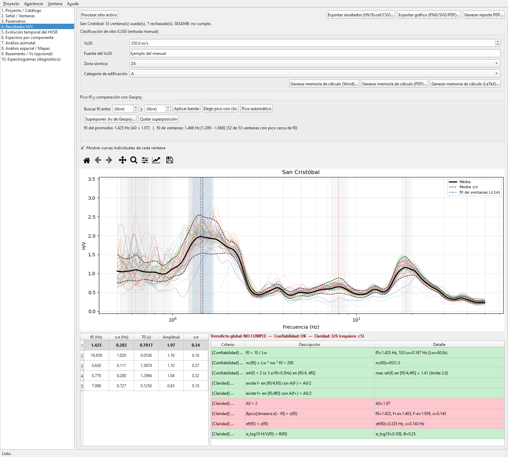
Hover over buttons and fields: many have a short help text. Every page scrolls with the mouse wheel.
Key concepts
What H/V measures
The Nakamura method divides the spectrum of the horizontal components by that of the vertical one, at each frequency. Over soft soil resting on much stiffer material, that ratio usually shows a peak whose frequency (f0) is associated with the deposit's resonance. It does not measure wave velocity directly: the peak reports the impedance contrast and, with other data, lets you estimate thicknesses.
| Symbol | Meaning |
|---|---|
| f0 | Frequency of the main peak of the mean H/V curve (Hz). |
| T0 | Fundamental period, T0 = 1/f0 (s). In the E.030 code it is called Ts. |
| A0 | H/V amplitude at the peak. |
| ±σ | Window-to-window variability. The shaded band of the curve is the mean ±σ. |
| Window | Stretch of the record (e.g. 30 or 60 s) used to compute one individual H/V curve. |
| Vs30 | Average shear-wave velocity in the upper 30 m. You enter it; the program does not compute it. |
| SESAME | European guideline (2004) with criteria to judge whether the curve is reliable and the peak is clear. |
The processing flow
Record → detrend (and optional high-pass filter) → windows → rejection of bad windows → taper and FFT of each component → smoothing → combination of the two horizontals → H/V ratio per window → stacking (log-normal mean by default) → peak detection → SESAME criteria.
A high peak is not always a soil resonance: it can also come from machinery, from the sensor or from broadband noise. That is why the program includes diagnostic pages (per-component spectra, spectrograms, temporal evolution).
1. Project / Catalog
This is where the project is built: you add records, assign the channel order and enter each site's metadata.
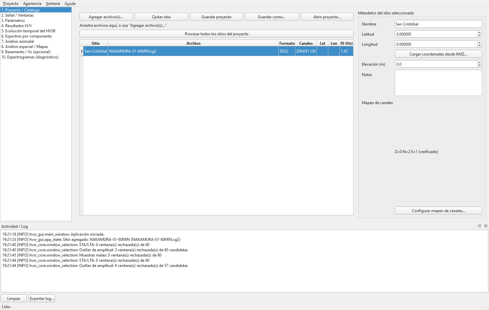
Input formats
| Format | Notes |
|---|---|
| SEG-2 (.sg2, .seg2) | It does not say which channel is Z, N or E: you must assign it (see below). |
| SAF (.saf) | SESAME ASCII format. It declares each column's component, so it is assigned automatically and marked as verified. |
| MiniSEED (.mseed, .miniseed) | If each component is in its own file, select all three together: they are grouped by station and the component comes from the channel code (BHZ, EHN…). Gaps are filled with zeros so they remain visible. |
| SAC, GCF | ObsPy can open them, but they have not been verified with real records in this program. |
Channel mapping (SEG-2)
A mistake here changes the whole result without any warning. Open Configurar mapeo de canales… and enter the channel number (starting at 0) of each component:
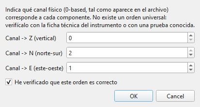
There is no universal order: it depends on the instrument and how it was set up. Confirm it with the instrument's datasheet or a known test. Until you tick “He verificado”, the site is shown as “unverified” and the activity log warns about it.
Metadata and coordinates
With the site selected you can edit name, latitude, longitude, elevation and notes. Cargar coordenadas desde KMZ… takes the point from a Google Earth file. Coordinates are needed for the spatial analysis (page 8).
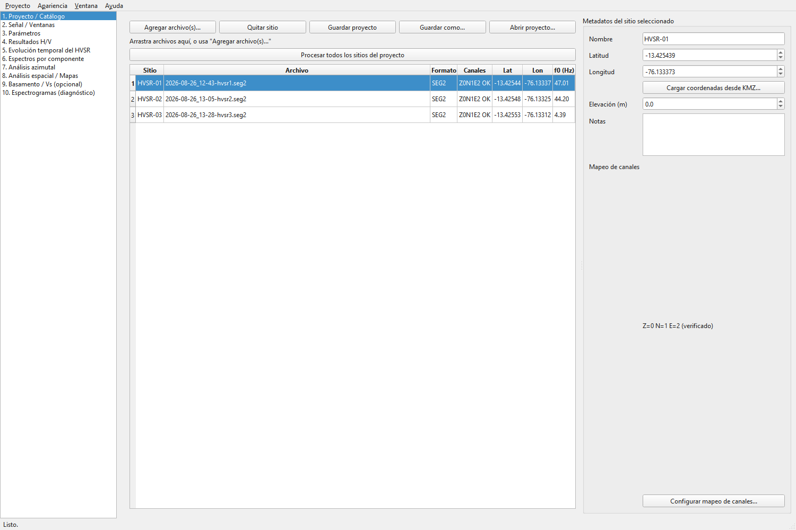
Buttons
- Agregar archivo(s)… — imports one or more records (you can also drag them onto the window).
- Quitar sitio — removes the selected site from the project (it does not delete the original file).
- Guardar proyecto / Guardar como… / Abrir proyecto… — see “Projects, formats and exports”.
- Procesar todos los sitios del proyecto — batch-processes with each site's parameters. If some sites have an unverified mapping, it asks for confirmation.
2. Signal / Windows
It shows the three traces (Z, N, E) with the analysis windows over them. It helps you decide which parts of the record are used.
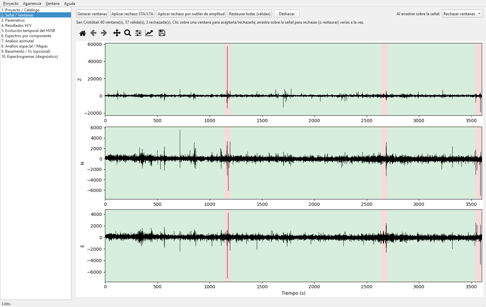
- Generar ventanas — splits the record according to the length and overlap on page 3.
- Aplicar rechazo STA/LTA — discards windows with transients (knocks, footsteps, nearby vehicles) by comparing short- and long-term energy.
- Aplicar rechazo por outlier de amplitud — discards windows whose amplitude is far from the rest.
- Restaurar todas (válidas) — marks all windows as valid again.
- Clicking a window accepts or rejects it by hand.
Bad samples (non-finite values, flat runs, saturation) and the Cox et al. (2020) criterion are applied automatically when processing, according to what you enable on page 3; they need no button here.
Before rejecting blindly, look at the spectrogram (page 10): a transient shows as a vertical band and a fixed-frequency source as a horizontal line.
3. Parameters
Parameters are stored per site. With Aplicar esta configuración a todos los sitios del proyecto you copy them to the other sites (each site keeps its chosen peak).
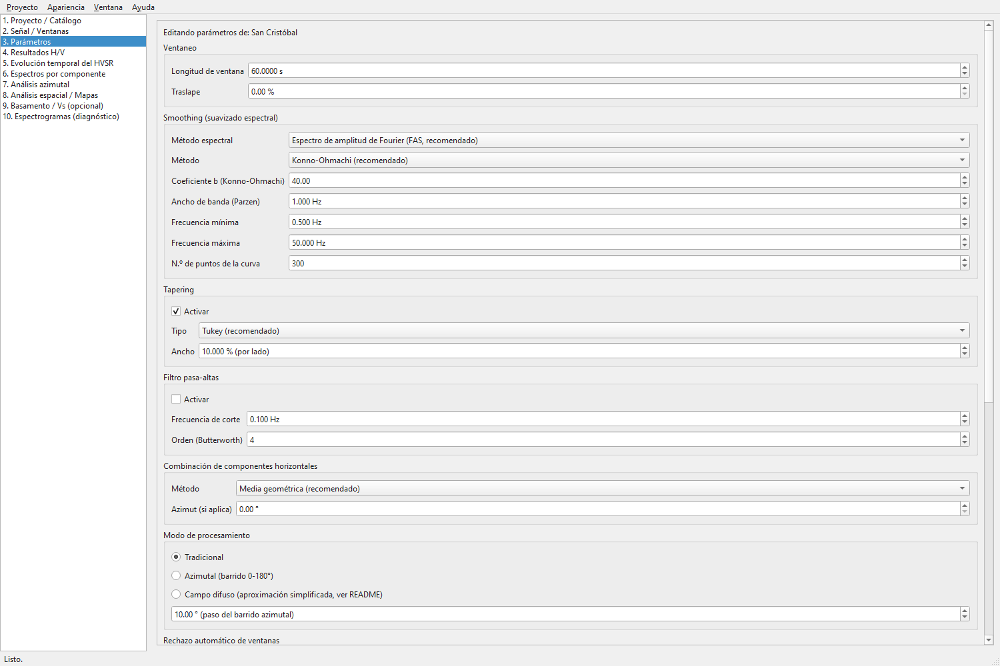
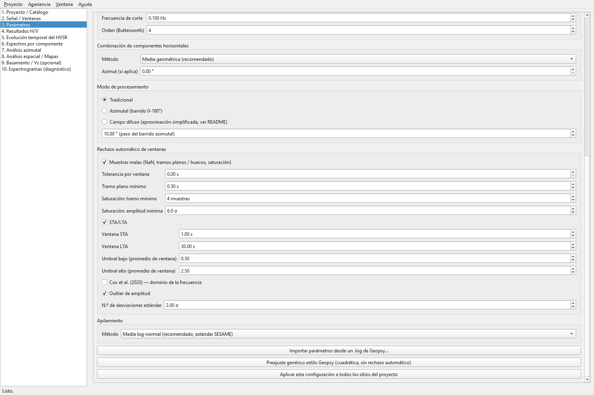
| Group | What it controls |
|---|---|
| Ventaneo | Length of each window (30 s by default) and overlap. SESAME asks for windows of at least 10/f0 s and enough cycles: for low f0 use long windows. |
| Smoothing | Spectral method (FAS recommended, or Welch), Konno-Ohmachi smoothing (b = 40 by default) or Parzen, output band (0.5–50 Hz by default) and number of points (300). |
| Tapering | Edge-tapering window: Tukey (10 % per side by default), Hann or Hamming. |
| High-pass filter | Optional (off by default): cut-off frequency and Butterworth order. |
| Horizontal-component combination | How N and E are joined: arithmetic, geometric (default) or quadratic (“squared average”) mean, total horizontal energy, vector summation, maximum, RotD50, single azimuth or “Directional energy” (an approximation of Geopsy's control). |
| Processing mode | Traditional (default) or diffuse field (simplified approximation). The “Azimutal” option does not change the H/V: the sweep is computed on page 7 and only its step is set here. |
| Automatic window rejection | Bad samples (on by default), STA/LTA, amplitude outlier and Cox et al. (2020) in the frequency domain. |
| Stacking | How the window curves are averaged: log-normal mean (recommended, SESAME standard), arithmetic or median. |
Shortcuts to get started
- Preajuste genérico estilo Geopsy — starting point: “squared average” combination, Konno-Ohmachi 40, no high-pass and no automatic rejection.
- Importar parámetros desde un .log de Geopsy… — reads the .log Geopsy writes next to each .hv and copies window length and overlap, taper, smoothing, frequency grid, horizontal combination and anti-trigger. When done it lists what was approximated or has no equivalent.
The A0 value and the SESAME clarity verdict change quite a lot with window length, smoothing and rejection. Use the same parameter set for all the sites of a project and record it in your report.
4. H/V results
This is the central page: it processes the active site and brings together the H/V curve, the peaks, the SESAME verdict and the E.030 classification.
The curve
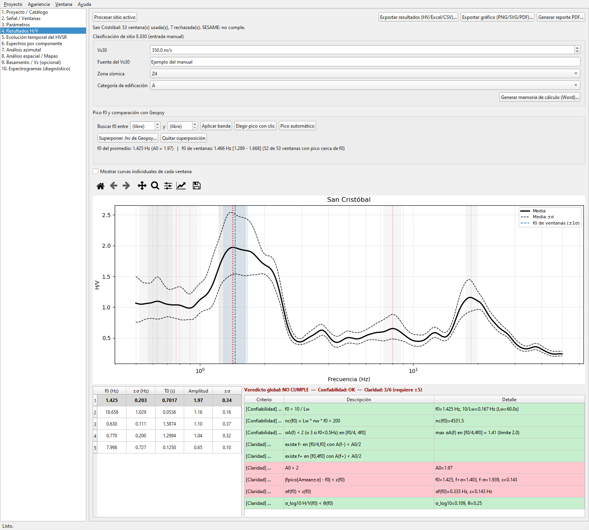
| Plot element | What it is |
|---|---|
| Thick black line | Mean (stacked) H/V curve. |
| Dashed black lines | Mean ±σ. |
| Coloured curves | Each window's curve (they can be hidden with the checkbox). |
| Thick red dotted line + grey band | f0 of the average: the frequency of the mean curve's maximum. The band is ±1σ of the peak frequency across windows. It is the f0 used by SESAME, E.030 and the reports. |
| Thin red lines | Secondary peaks of the mean curve (up to five). |
| Dashed blue line + blue band | f0 from windows: geometric mean of each window's peak near f0, with its ±1σ. It is the second estimator Geopsy reports. If it matches the red one the peak is stable; if they are far apart it is broad or unstable. |
| Dotted orange line | f0 of a Geopsy .hv, if you overlay one. |
Peak table and SESAME criteria
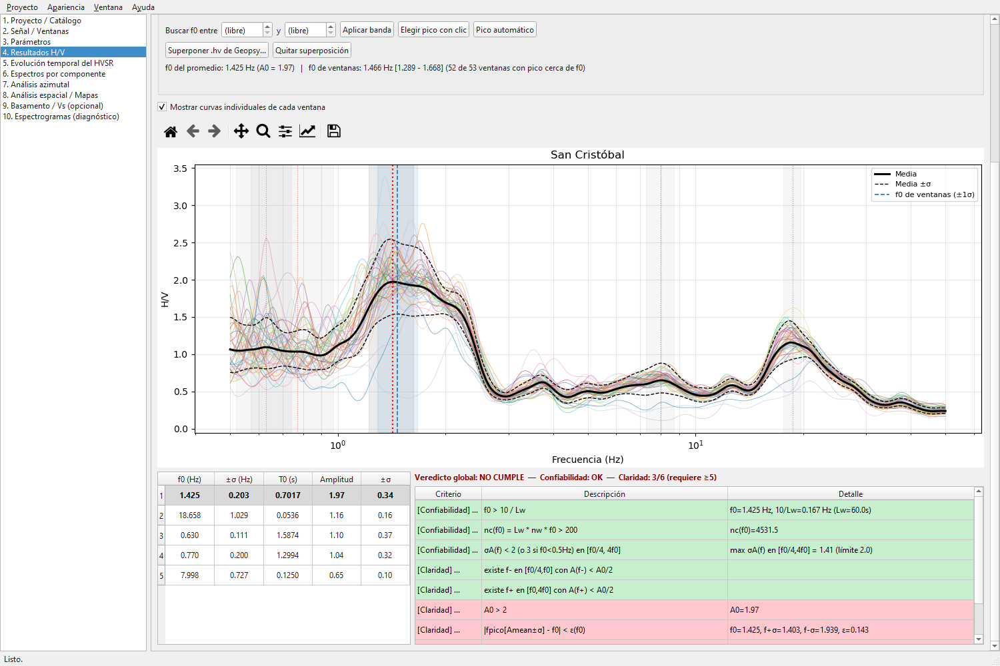
- The first row is the dominant peak and is highlighted. The columns are f0, its ±σ, the period T0 = 1/f0, the amplitude and its ±σ.
- Under the verdict (“CUMPLE” / “NO CUMPLE”) are the 3 reliability and the 6 clarity criteria. The overall verdict requires full reliability and at least 5 of the 6 clarity criteria. See “SESAME criteria”.
Choosing another peak
The automatic peak is the curve's maximum. If it is not the one you want, the “Pico f0 y comparación con Geopsy” group offers:
- By band. Type “Buscar f0 entre … y …” and press Aplicar banda (changing the numbers alone does nothing). The highest peak within the band is searched; “(libre)” means no limit. To see a change, the band must exclude the current peak.
- With a click. Press Elegir pico con clic and click on the curve. The peak becomes the mean curve's maximum within ±12 % of the click's frequency. First switch off the plot toolbar's zoom and pan, or the click is ignored. If that maximum was already the main peak you will see no change.
- Back to automatic. Pico automático removes the band and the manual peak.
In all three cases SESAME and E.030 are recomputed without reprocessing the signal; the curve does not change, only which peak is the dominant one.
Comparing with Geopsy
Superponer .hv de Geopsy… draws in orange the curve of a Geopsy .hv file and shows the differences in f0, A0 and curve shape. Quitar superposición removes it.
E.030 classification
Enter Vs30, its source, the seismic zone (Z1–Z4) and the building category (A–D) and press one of the three memo buttons: Generar memoria de cálculo (Word)…, (PDF)… or (LaTeX)…. Details in “E.030 classification and memo”.
Top buttons
- Procesar sitio activo — computes the active site's H/V in the background; the window stays responsive.
- Exportar resultados (HV/Excel/CSV)…, Exportar gráfico (PNG/SVG/PDF)…, Generar reporte PDF… — see “Projects, formats and exports”.
5. Temporal evolution of the HVSR
It answers a practical question: was the record long enough for the curve to stabilize? For each window over time it shows the H/V (2D on top, 3D surface below).
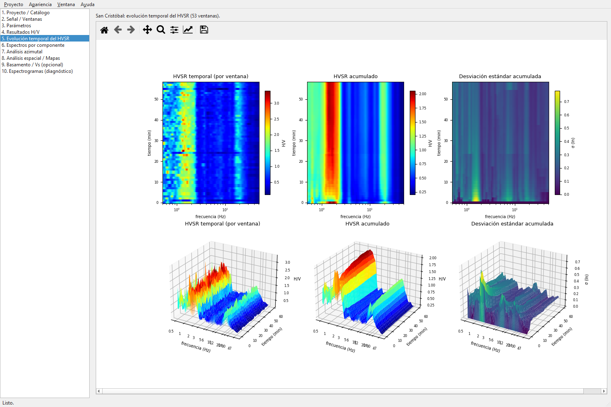
- Temporal HVSR (per window) — each window's curve; constant vertical bands indicate a stable peak.
- Cumulative HVSR — the average up to each instant; if the bands stop moving, adding more time no longer changes the curve.
- Cumulative standard deviation — it should fall and settle; if it stays high, the measurement is short or noisy.
The 3D plots can be rotated with the mouse. At least two valid windows are needed.
6. Spectra by component
It is equivalent to Geopsy's “Spectrum” tool. It shows the average spectrum of Z, N, E and of the combined horizontal (H), with the H/V below on the same frequency axis, plus a diagnosis of the peak's origin.
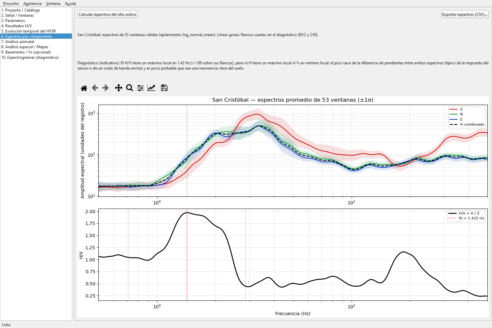
Press Calcular espectros del sitio activo (after processing). Exportar espectros (CSV)… saves the data.
How to read the diagnosis
The program compares each spectrum at f0 with its flanks (f0/2 and 2·f0). A maximum in H or a minimum in V only counts if it is local:
| Result | Meaning |
|---|---|
| H | H has a local maximum at f0 and V has no minimum: the peak comes from the horizontals (the closest to a resonance). |
| V | V has a local minimum at f0: the peak comes from a trough in the vertical. |
| mixed | Both contribute. |
| slopes | The H/V has a local maximum, but neither H nor V has a local feature: it arises from the difference in slopes between the two spectra (typical of the sensor's response or broadband noise). It is unlikely to be a clear soil resonance. |
| no peak | The H/V does not stand out from its flanks. |
It also warns if all three components rise together at f0: it may be a monochromatic source (machinery, regular traffic) rather than the soil.
The diagnosis is indicative: a single record and a pair of flanks do not replace the specialist's judgment.
7. Azimuthal analysis
It computes the H/V while rotating the horizontal component from 0° to 180° to detect directional anisotropy at the site (for example from topography or faults).
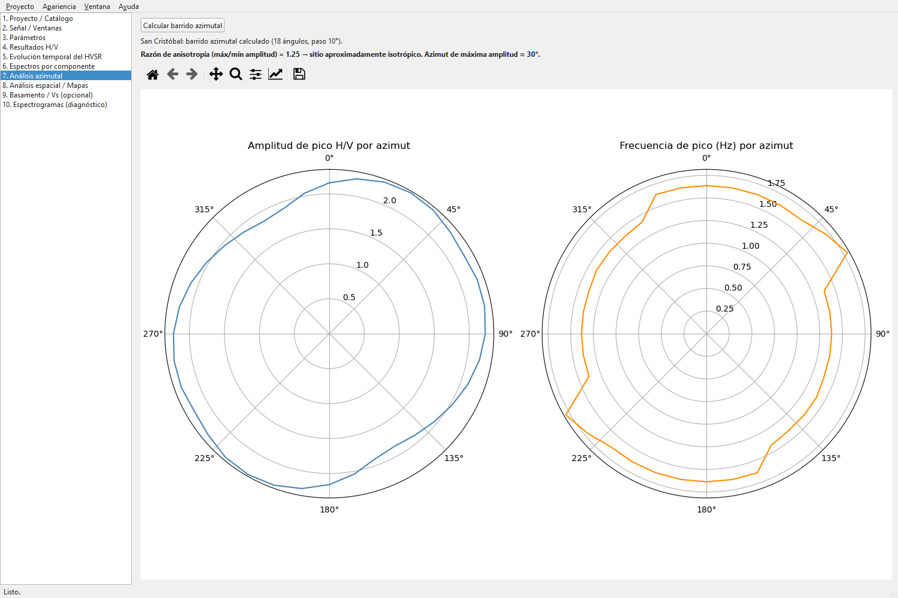
- Press Calcular barrido azimutal (the step, in degrees, is set on page 3).
- The text line gives the anisotropy ratio (maximum / minimum amplitude) and the azimuth of maximum amplitude. Above a threshold it reports “anisotropía direccional significativa”; otherwise “aproximadamente isotrópico”.
8. Spatial analysis / Maps
It gathers several sites with coordinates to see how f0, T0 or amplitude vary across the area. It needs at least two sites with latitude and longitude (load them from KMZ on page 1).
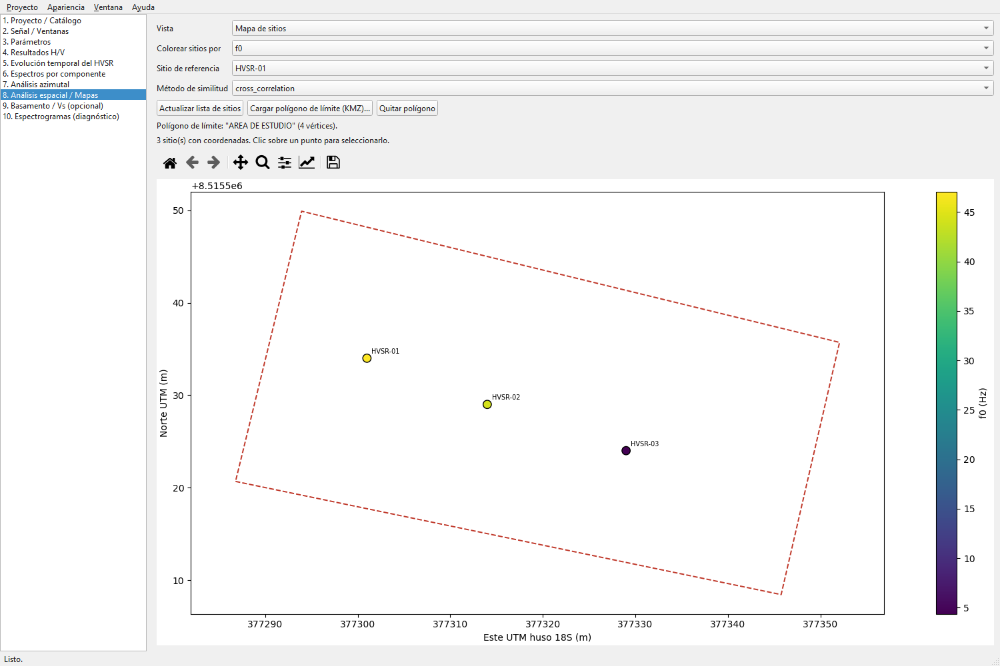
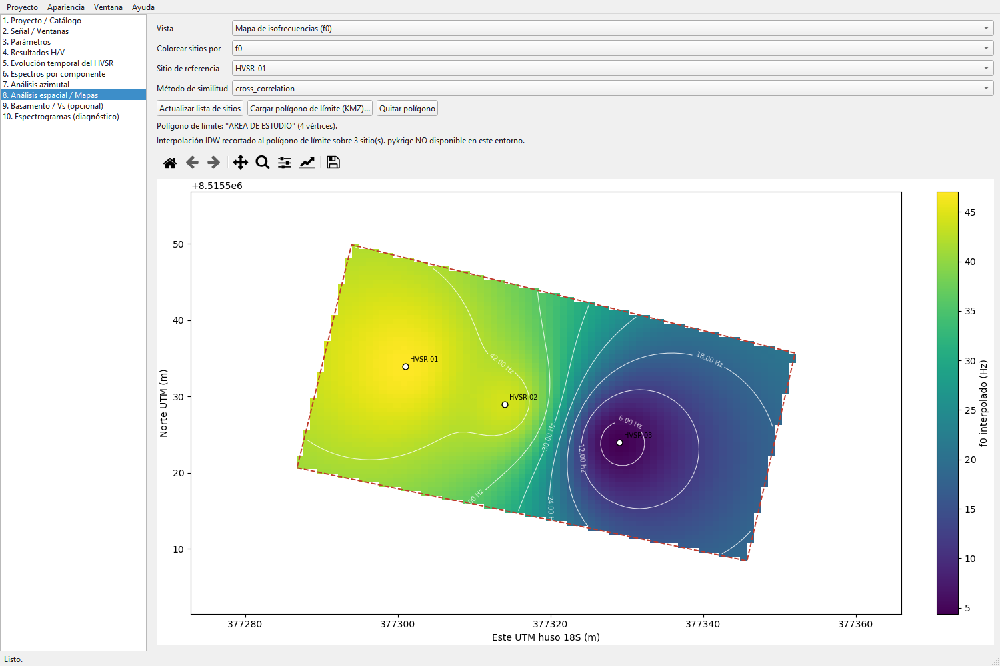
- Vista — site map, iso-frequency (f0), iso-period (T0), amplitude or profile section (virtual soundings). Click a site on the map to select it.
- Colorear sitios por — f0 or similarity to a reference site (cross-correlation or LCSS).
- Cargar polígono de límite (KMZ)… / Quitar polígono — clips the maps to the study area.
- Actualizar lista de sitios — refreshes the list after adding or processing sites.
Interpolation is IDW (always available). Kriging is only available if the optional PyKrige library is installed; the screen says so.
With few sites the interpolated map is a visual aid, not a measurement between the points.
9. Bedrock / Vs (optional)
Optional, indicative module: it estimates bedrock depth from f0 and fits a simple Vs profile. It is meant to support, not replace, an MASW or refraction survey.
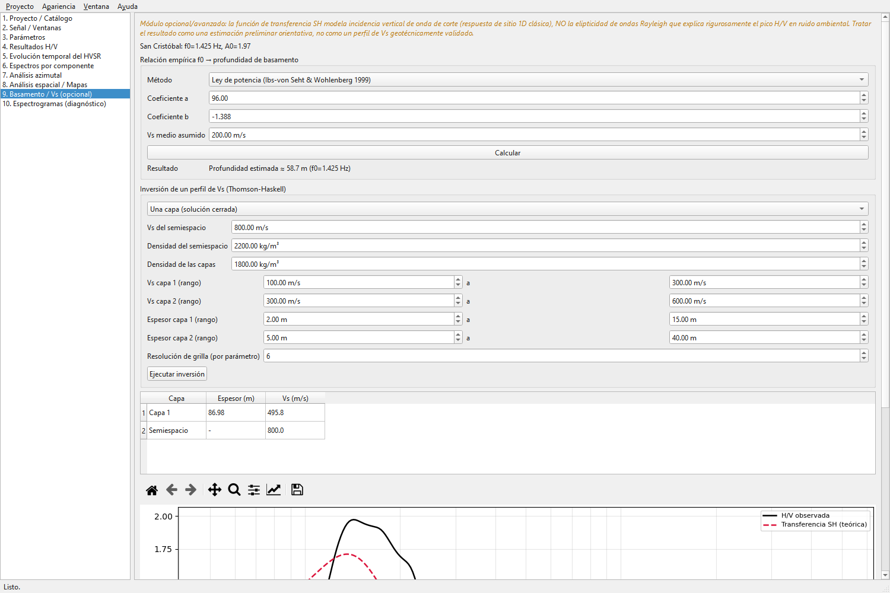
- Empirical relation — h = a·f0b (power law, with general literature coefficients) or quarter-wavelength with the mean Vs you assume. Press Calcular.
- Inversion (Thomson-Haskell) — one layer (closed form) or two layers (grid search). You set Vs and thickness ranges, densities and grid resolution; Ejecutar inversión returns the profile and draws the theoretical curve over the observed one.
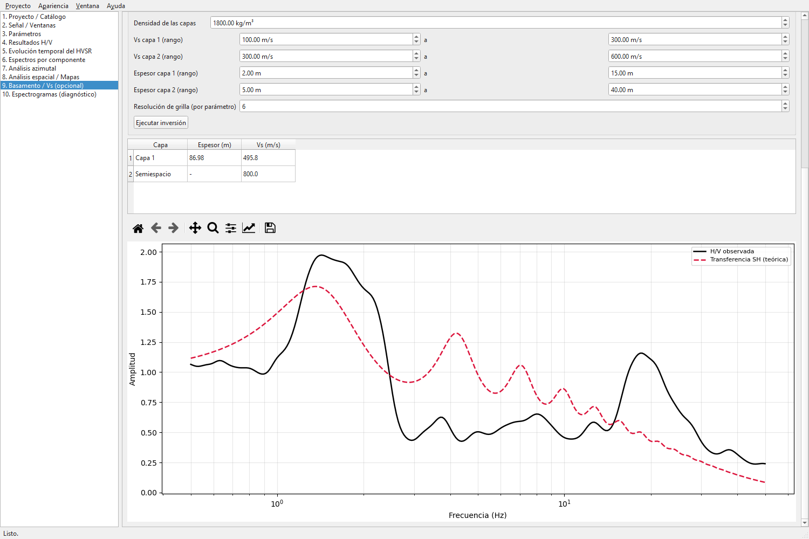
The model assumes vertically incident shear waves (classic 1D site response), not the Rayleigh-wave ellipticity that rigorously explains the H/V peak in ambient noise. Treat the result as a preliminary estimate and calibrate the coefficients with local data (SPT, refraction) before using it.
10. Spectrograms (diagnostic)
It shows the spectrogram of each trace (Z, N, E) of the whole record, apart from the processing flow: it does not modify windows or results. It is for inspecting the record.
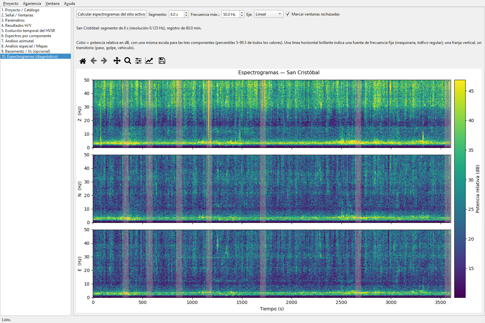
| Control | Effect |
|---|---|
| Segmento | Duration of each FFT. Frequency resolution is 1/segment (8 s → 0.125 Hz). Longer separates frequencies better; shorter follows changes in time better. Changing it requires recomputing. |
| Frecuencia máx. | Displayed upper limit (only redraws). |
| Eje | Linear or logarithmic; logarithmic emphasizes the low band (< 5 Hz). |
| Marcar ventanas rechazadas | Shades discarded windows in red. |
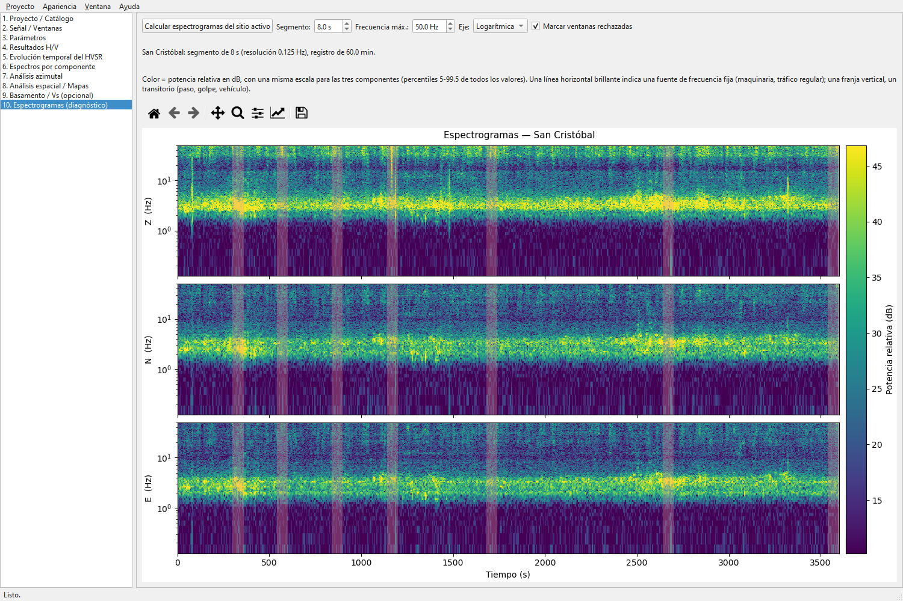
Colour is relative power in dB, with a common scale for the three components (5th–99.5th percentiles of all values). A bright horizontal line indicates a fixed-frequency source (machinery, regular traffic); a vertical band, a transient (footstep, knock, vehicle).
If the energy drops sharply below a certain frequency in all three components, the sensor probably cannot see that band (the geophone's natural frequency). An H/V peak there should be treated with caution.
Projects, formats and exports
Project (.hvsrproj)
Guardar proyecto (Ctrl+S) writes a single file with everything processed: sites, parameters, windows, results and peaks, plus the per-window curves, the per-component spectra and the azimuthal sweep, the active site and the page you were on, and the report template. Guardar como… (Ctrl+Shift+S) picks another path. When you open the project everything is as you left it, with no reprocessing.
- Waveforms are not saved: they are re-read from the original files, which must remain in their folder. If one is missing you are warned on opening and the saved results are kept (without the signal or the ability to reprocess).
- Spectrograms are not saved either; they are recomputed in a couple of seconds.
- Projects from earlier versions (plain JSON) still open; they lack the per-window curves until you reprocess.
- The file is written to a temporary one first and then replaces the old one: a failure mid-save does not corrupt an existing project.
Exporting results
Exportar resultados (HV/Excel/CSV)… picks the format from the filter or the extension:
| Format | Content |
|---|---|
| .hv (Geopsy) | Same header and columns as Geopsy (frequency, average, minimum, maximum), with f0 from the average, f0 from windows and number of windows; it also writes a .log with the parameters. |
| Excel (.xlsx) | Sheets Resumen, Curva HVSR (with chart), Picos, SESAME, Ventanas and Curvas por ventana. |
| CSV | The H/V curve: frequency, average, minimum, maximum, standard deviation of the logarithm and 10th and 90th percentiles. |
Exportar gráfico (PNG/SVG/PDF)… saves the plot as you see it (if you hid the individual curves, they stay hidden). Right-clicking any plot lets you copy it or save it as a 300 dpi PNG.
PDF reports
Generar reporte PDF… opens the template dialog (company, project, optional logo, footer and format).
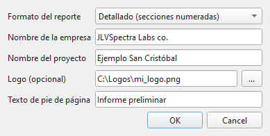
- Classic — one page with the field record, the curve with its peak, the results box (Vs30, classification, f0, T0, A0) and the SESAME check, plus a second sheet with the “Verificaciones SESAME” table, the temporal-evolution page and the E.030 annex.
- Detailed — numbered sections: site data, parameters, curve, peaks, SESAME criteria (detailed table and the “Verificaciones SESAME” table), E.030 and temporal evolution.
- Consolidated — from the Proyecto menu → Generar reporte consolidado (PDF)…: one document with all the processed sites.
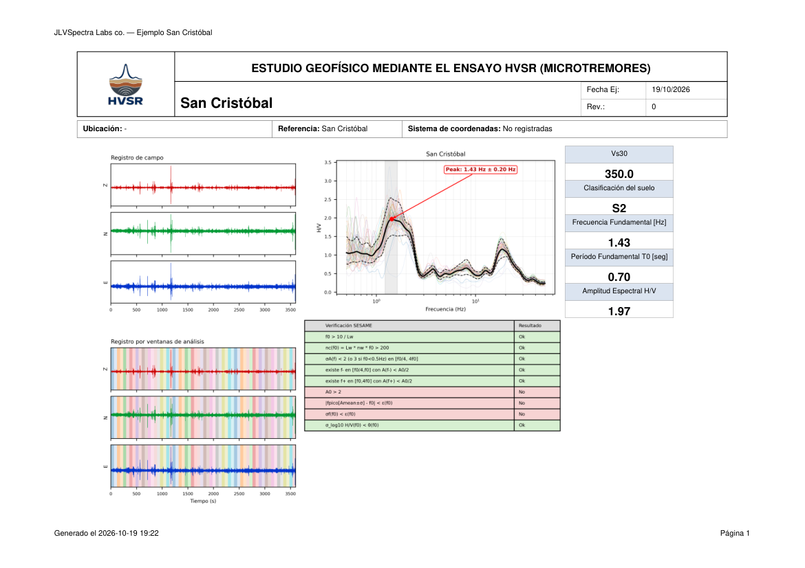
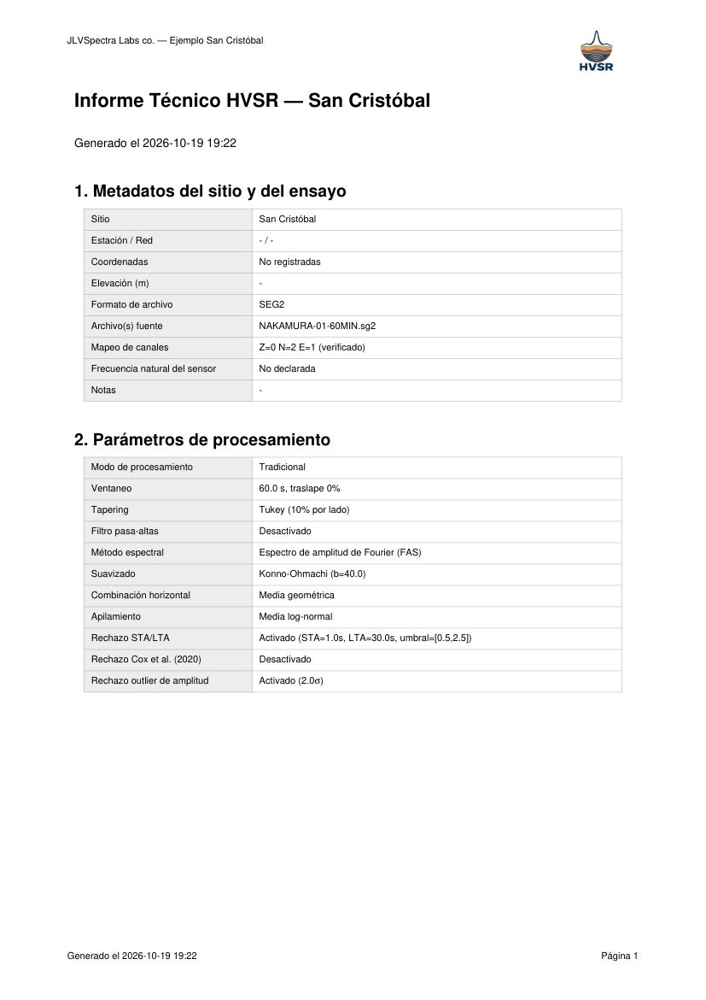
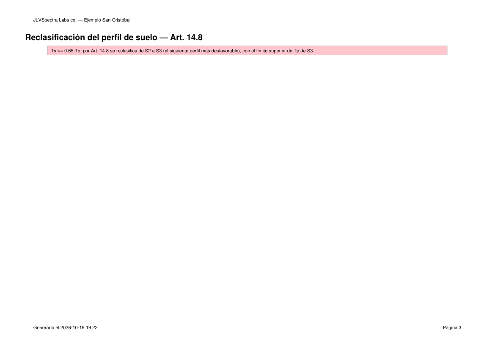
Copying, menus and shortcuts
Copying tables to Excel
In any table (peaks, SESAME criteria, catalog, profile layers) click and press Ctrl+C: the selection —or the whole table if nothing is selected— is copied with its headers, tab-separated, ready to paste into Excel with Ctrl+V.
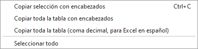
Right-click also offers copying the whole table and a decimal-comma variant: if your Excel uses a decimal comma (typical in Spanish), 1.587 could be read as 1587 or as a date; with that option 1,587 is copied.
Copying or saving a plot
Right-click any plot: Copiar imagen al portapapeles or Guardar como PNG (300 dpi)…. The plot's toolbar also offers zoom, pan and saving.
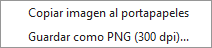
Menus and shortcuts
| Shortcut | Action |
|---|---|
| Ctrl+N | New project |
| Ctrl+O | Open project |
| Ctrl+S | Save project (asks for the path only the first time) |
| Ctrl+Shift+S | Save project as… |
| Ctrl+C | Copy the selected table (with headers) |
| F1 | Open this manual |
| Ctrl+Q | Quit |
Apariencia menu: Claro (light) and Oscuro (dark) themes and, under “Otros recomendados”, Azul profesional and Alto contraste (your choice is remembered). Ventana menu: show or hide the activity log and reset the layout.
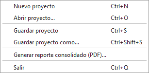
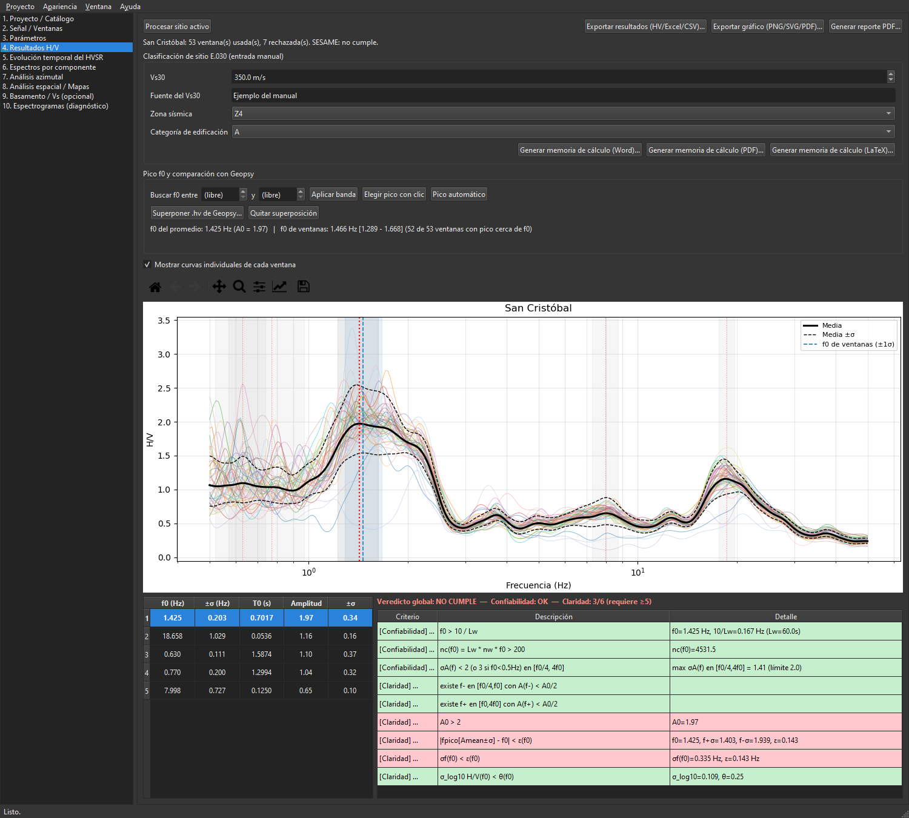
SESAME criteria
The SESAME (2004) criteria assess two things: whether the curve is reliable and whether the peak is clear. In the table on page 4 each criterion is shown in green (met) or red (not met) with its detail.
| Group | Criterion | What it checks |
|---|---|---|
| Reliability | f0 > 10 / Lw | The window is long enough to see several cycles of f0. |
nc(f0) = Lw·nw·f0 > 200 | There are enough significant cycles in total (length × number of windows × f0). | |
σA(f) < 2 (or 3 if f0 < 0.5 Hz) in [f0/4, 4f0] | The window-to-window scatter of the curve is low near the peak. | |
| Clarity | exists f− in [f0/4, f0] with A(f−) < A0/2 | The curve falls to half below the peak. |
exists f+ in [f0, 4f0] with A(f+) < A0/2 | The curve falls to half above the peak. | |
A0 > 2 | The peak has enough amplitude. | |
|fpico[Amedia ± σ] − f0| < ε(f0) | The peak of the mean ±σ curves lies close to f0. | |
σf(f0) < ε(f0) | The peak frequency is stable across windows. | |
σlog10 H/V(f0) < θ(f0) | The peak amplitude is stable across windows. |
The overall verdict is CUMPLE (met) if all 3 reliability criteria and at least 5 of the 6 clarity criteria are met. ε(f0) and θ(f0) are thresholds that depend on the f0 range, taken from the SESAME guideline.
“NO CUMPLE” does not mean the measurement is useless: a real but broad or low-amplitude peak (A0 < 2) fails clarity. Interpret it together with the curve and the diagnostics.
The “Verificaciones SESAME” table in the reports
In addition to the criteria table with its detail, the detailed and the classic reports include the Verificaciones SESAME table, written with the notation of the guideline (2004): one row per condition, with its formula, and the result Ok or No. The two wordings of the σA(f) criterion share a single result, because only one applies depending on whether f0 is above or below 0.5 Hz.
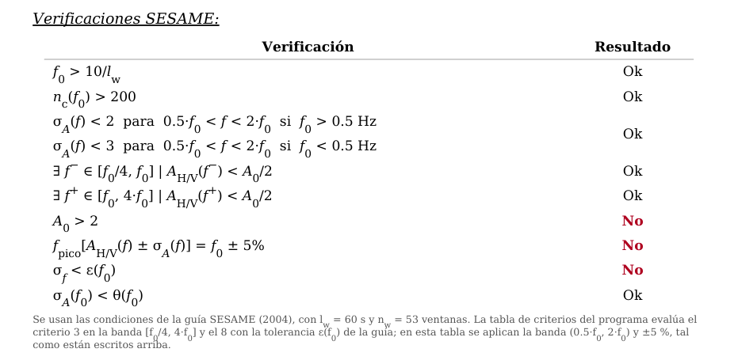
Two criteria are written in this table exactly as the guideline words them: σA(f) is measured in the band 0.5·f0 < f < 2·f0 (the program's criteria table uses [f0/4, 4f0]) and the position of the peak of the mean ±σ curves must lie within f0 ± 5 % (the criteria table uses the tolerance ε(f0)). For that reason the two tables may differ in those two criteria at some sites; a footnote in the report says so. The program's overall verdict is still computed with the criteria table.
The criteria were implemented from the SESAME guideline, with the ε and θ numerical tables transcribed, and have not yet been checked against a published reference case.
E.030 classification and memo
From Vs30, the seismic zone and the measured f0, the program classifies the soil profile, obtains the site parameters and checks the predominant period, following the tables of the E.030 code (2026 edition).
Soil profiles
| Profile | Name (Table No. 2) | Vs30 (Table No. 3) |
|---|---|---|
| S0 | Rock | Vs30 ≥ 800 m/s |
| S1 | Very stiff soils | 550 ≤ Vs30 < 800 m/s |
| S2 | Stiff soils | 350 ≤ Vs30 < 550 m/s |
| S3 | Intermediate soils | 200 ≤ Vs30 < 350 m/s |
| S4 | Soft soils | Vs30 < 200 m/s |
| S5 | Exceptional soils | Not classified by Vs30: requires a site-specific study (Art. 13) |
The lower limit of each interval is inclusive (Vs30 = 550 m/s is S1).
What it computes
- Z — zone factor (Z1–Z4).
- S — soil factor; for profiles S2 and S3 it is interpolated linearly by Vs30 within its range. In zone Z4 with profile S4 the code requires a site-response analysis and there is no tabulated S.
- Tp and TL — spectrum periods (Table No. 5), also interpolated for S2 and S3.
- Ts = 1/f0 and the check Ts < 0.65·Tp.
- Factor C (Table No. 6), for reference only: it depends on the structure's period, which the program does not know.
Art. 14.8: reclassification
For building category A or B in zone Z4 on S1 to S4 soils, if Ts ≥ 0.65·Tp the next less favourable profile is taken, with the upper limit of Tp (or a site-specific study is made). In other cases the check is shown as additional information and the memo says so. If the profile is already S4, the next one (S5) has no parameters: a site-specific study is required.
The calculation memo: Word, PDF and LaTeX
Any of the three buttons creates a document with: zone factor, profile classification by Vs30, soil factor S, periods Tp and TL (with the step-by-step interpolation), the site's predominant period, the Ts < 0.65·Tp check, the Art. 14.8 reclassification, the reference factor C and considerations and limitations.
| Button | What you get | When to use it |
|---|---|---|
| Generar memoria de cálculo (Word)… | A .docx file. | To edit the text in Word before delivering it. |
| Generar memoria de cálculo (PDF)… | A LaTeX-formatted PDF, ready to deliver. | The most direct option: you do not need LaTeX installed or an internet connection. |
| Generar memoria de cálculo (LaTeX)… | The editable .tex file and its PDF. | To include the memo in a thesis or paper, or to customise it in LaTeX. |
All three give the same numbers, because they come from the same calculation. The PDF is compiled with a LaTeX compiler that is bundled with the program; the first time it prepares a copy of its packages in your user folder (about 40 MB, a couple of seconds) and afterwards it compiles in a few seconds. If you already have MiKTeX or TeX Live installed, the LaTeX button uses it.
Every number is computed in the program; the document only presents it.
The tables were transcribed from the provided text of the E.030 code (2026 edition). Check them against the current official text before critical use, and make sure the Vs30 you enter comes from an appropriate test (MASW, refraction, SPT) or state that it is theoretical.
License and activation
The program ships with a free 14-day trial. After that it needs a license from JLVSpectra Labs co. tied to your computer, with an expiry date or perpetual. Everything works offline: the program neither sends nor receives anything.
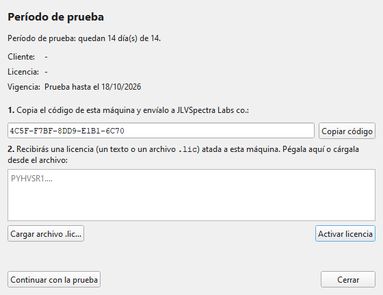
How to activate a license
- Open Ayuda → Licencia y activación… and press Copiar código. This is the machine code (
XXXX-XXXX-XXXX-XXXX-XXXX). - Send it to JLVSpectra Labs co. You will receive a license: a text starting with
PYHVSR1.or a.licfile. - Paste the text in the box, or press Cargar archivo .lic…, then Activar licencia.
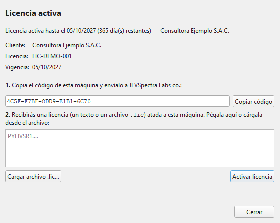
What you should know
- The machine code — is an irreversible digest of your computer's Windows identifier: it contains no name or personal data. The license only works on the computer whose code was reported.
- Renewing — when a dated license is about to expire, the program warns you at start-up and in the title bar. Ask for the renewal with the same code and activate it the same way as the first time: it is installed over the previous one.
- New computer or Windows reinstall — the machine code changes: ask for a new license with the new code.
- If it expires while the program is open — the window is locked and a license is requested; your saved work is not lost. Save the project (Ctrl+S) before it expires.
- System date — if the computer's clock is behind the last time you used the program, it locks until you fix it.
- Your results, reports and projects are yours: nothing is deleted when the license expires; the program simply stops opening until it is renewed.
The full text of the license agreement is under Ayuda → Acerca de → Licencia.
Limitations and good practice
Knowing what the program does not guarantee is part of using it well.
Validation
- The computation was checked against Geopsy on two records from the same sensor (63 minutes, ST3 instrument) using exactly the parameters of Geopsy's .log: the curve matches across the whole band (correlation ≈ 0.999), with f0 within ~0.2–2 % and A0 within ~2–4 %. A constant bias of ≈ 5 % remains (our curve slightly lower) with no identified cause.
- It has not yet been validated with other instruments or sites. For a new project, compare at least one record with another program.
About parameters and method
- A0 and the SESAME clarity verdict depend a lot on window length, smoothing and window rejection. With default parameters instead of Geopsy's, A0 came out almost double in one test.
- The STA/LTA rejection averages the ratio within each window: with the same thresholds it does not necessarily discard the same windows as Geopsy.
- Parzen smoothing approximates Geopsy's constant-width smoothing.
- Diffuse-field mode is a simplified approximation (not the full Green's-function formulation) and “Directional energy” is a practical approximation of Geopsy's control.
- A single measurement is a preliminary result: good practice recommends several measurements per point.
About the data
- Channel order (SEG-2): a wrong order changes the result without warning. Always verify it.
- Sensor response: below the geophone's natural frequency the spectra fall and the H/V can show peaks that are not from the soil. State the sensor's natural frequency if you know it and check “Espectros por componente” and “Espectrogramas”.
- Local sources: machinery or regular traffic create narrow peaks that are not resonances. Spectrograms help you see them.
- SAC and GCF are opened by ObsPy but have not been verified with real records in this program.
About other modules
- Basamento / Vs: 1D SH-wave model, not Rayleigh waves; general literature coefficients. Indicative only.
- Maps: with few sites, interpolation is a visual aid.
- E.030: transcribed tables; check them against the current code. The program does not determine Vs30: you enter it.
- Peak diagnosis: indicative, not conclusive.
Good practice
- Verify each instrument's channel order.
- Use the same parameter set throughout the project and record it.
- Check the spectrograms and the per-component spectra before accepting a peak.
- Compare at least one record with another program on new projects or with different instruments.
- Present the results as support for the responsible professional's judgment.
FAQ
I press “Aplicar banda” or “Elegir pico con clic” and see no change
The curve never changes: what changes is which peak is the dominant one (thick red line, peak table, SESAME and E.030). If the highest peak was already inside the band, or the click fell within ±12 % of the current peak, the result is the same. For click mode, first switch off the toolbar's zoom and pan. If “Reprocesa el sitio” appears, the site has no per-window curves (project saved with an earlier version): press Procesar sitio activo.
The activity log says “mapeo de canales NO VERIFICADO”
It is a warning, not an error: the Z/N/E order has not been confirmed. Open Configurar mapeo de canales…, confirm the order with the instrument datasheet and tick “He verificado”.
The SESAME verdict says “NO CUMPLE” but the curve looks fine
A real but broad or low-amplitude peak (A0 < 2) does not meet clarity. Look at which criteria fail in the table (red), how long the record lasted (page 5) and whether the window length is enough for the f0 you are after.
A high-frequency peak or several small peaks appear
They are usually local or sensor noise. Check the spectrograms (a bright horizontal line is a fixed-frequency source) and limit the f0 search band if appropriate.
I paste a table in Excel and 1.587 shows up as 1587 or as a date
Your Excel uses a decimal comma. Right-click the table and choose “Copiar toda la tabla (coma decimal, para Excel en español)”.
Opening a project shows a warning that the data file cannot be found
The project stores the results but not the original signal. Put the file back in the folder where it was (the path in the warning) or re-import the record. Meanwhile you can view and export the saved results.
The memo (Word, PDF or LaTeX) is not generated
Check that you entered Vs30 (greater than 0) and the seismic zone, and look at the activity log: the error message shows the cause. If only the PDF fails, generate the memo in Word, which does not depend on the compiler.
The manual does not open when I press F1
Open docs/manual/index.html, in the program's installation folder, manually with your browser. If it is missing, reinstall the program.
The program is slow with long records
Processing runs in the background and the window stays responsive. Records over an hour at a high sampling rate take longer; the azimuthal analysis and the per-component spectra go through all the windows.
License, credits and version
pyhvsr-suite version 0.1.0
Developed by JLVSpectra Labs co.
License
© 2026 JLVSpectra Labs co. All rights reserved. Use of the program is governed by the end-user license agreement (file LICENSE.txt, also shown under Ayuda → Acerca de → Licencia). In short: it is licensed, not sold; you may use it, including for professional and commercial purposes, and the reports you produce are yours; you may not copy it, redistribute it or reverse engineer it; it is provided without warranty and the user is responsible for verifying the results.
Third-party components
The program uses open-source libraries (ObsPy, NumPy, SciPy, Matplotlib, ReportLab, openpyxl, pyproj and others) under their own licenses; they are listed in THIRD_PARTY_NOTICES.txt. The names Geopsy, SESAME, SEG-2, SAF, MiniSEED, Tromino and E.030 belong to their owners and are used only to indicate format compatibility or normative reference; pyhvsr-suite includes no Geopsy code and is not affiliated with its authors.
References
- Nakamura, Y. (1989). A method for dynamic characteristics estimation of subsurface using microtremor on the ground surface. QR of RTRI, 30(1).
- SESAME (2004). Guidelines for the implementation of the H/V spectral ratio technique on ambient vibrations.
- Konno, K. & Ohmachi, T. (1998). Ground-motion characteristics estimated from spectral ratio between horizontal and vertical components of microtremor. BSSA, 88(1).
- Cox, B. R., Cheng, T., Vantassel, J. P. & Manuel, L. (2020). A statistical representation and frequency-domain window-rejection algorithm for single-station HVSR measurements. Geophysical Journal International, 221(3).
- Ibs-von Seht, M. & Wohlenberg, J. (1999). Microtremor measurements used to map thickness of soft sediments. BSSA, 89(1).
- Technical Code E.030 “Seismic-Resistant Design” (2026 edition).